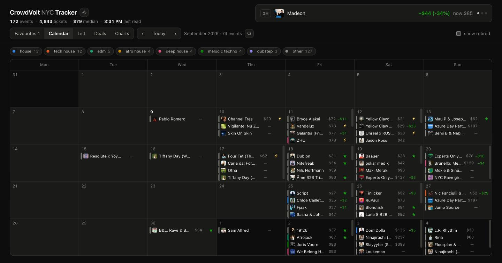
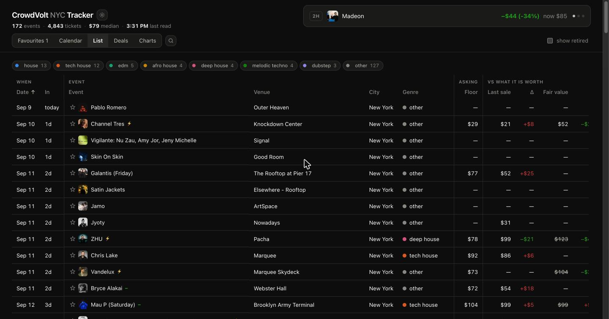
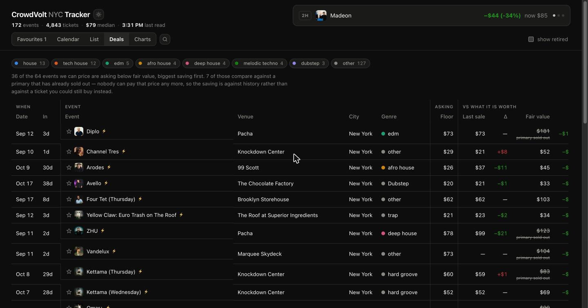
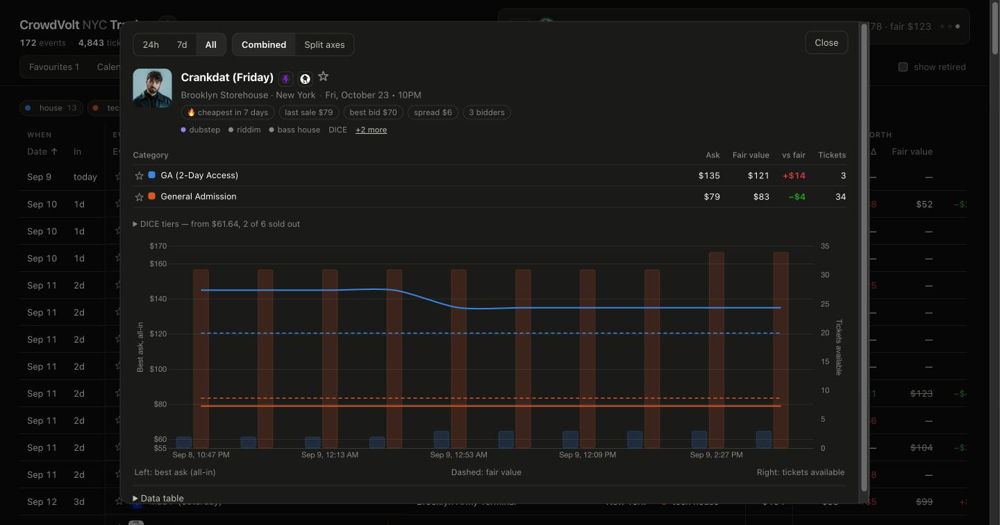

It tracks resale ticket prices for every event in New York, once an hour, and compares them to what the same ticket costs new.
Fair value is the cheapest comparable ticket you could still buy on the original seller — DICE, mostly. Everything else is context.
| −$8 | The resale ask is below what you would pay new. A genuine saving. |
| +$29 | The resale ask is above it. Buy direct instead. |
| — | We cannot price this event. Its seller (AXS, Ticketmaster, Four Venues) does not let us read prices, so we show nothing rather than a guess. |
Green always means cheaper for you, everywhere on the page — including price changes, where a falling price is green. That is the opposite of a stock ticker, on purpose: you are buying.

Each day scrolls on its own, so a busy Saturday never stretches the row. The coloured bar on the left is the genre — click a genre chip to filter. Click any event to open it.
| ⚡ | 20% or more below fair value |
| ★ | Below fair value |
| 🔥 | Cheapest it has been in 7 days |
| − + | Moved down / up in the last 24 hours |

| Asking | What the cheapest ticket costs right now. |
| Vs what it is worth | The last price someone actually paid, and fair value — each with its own difference beside it. |
| Moved | How the price changed over 4 hours, a day, 3 days, a week. |
| Supply | Tickets listed, and how many ticket categories exist. |
Click any heading to sort by it. A struck-through fair value with primary sold out means you can no longer buy at that price — the comparison is against history, not an option you have.

Shown in both dollars and percent, because $20 off a $40 ticket and off a $400 one are not the same thing.

The table is also the chart legend and the filter — click a row to show only that category. On the chart, solid lines are resale asks, bars are tickets available, and the dashed line is fair value.
The two small icons by the title open the event on CrowdVolt and, where we can price it, on the original seller.
Click a ☆ on any row to follow an event. A Favourites tab appears, and favourites rise to the top of their day in the calendar.
Click the star on a ticket category instead and you pin it: every view then shows that category rather than the event's cheapest ticket. If you only want the 2-day pass, the calendar stops telling you $79 when the pass you want is $135. Pinned rows are tagged with the category name, so a price is never mistaken for the floor.
Favourites live in this browser only — they will not follow you to your phone. There is no login to hang them off.
| Freshness | Prices are read hourly; the page re-reads them every 20 minutes on its own. |
| All-in prices | Every figure includes fees, on both sides, so the comparison is like for like. |
| Last sale | Only shown as a comparison when the event has one ticket category. With several, there is no way to tell which one sold, so we do not pretend. |
| Coverage | 172 NYC events. Roughly half can be priced against the original seller. |